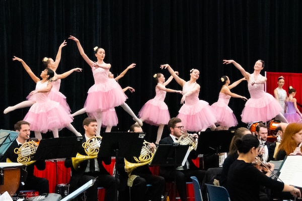

About
RCO - The Place to Go!
The Richmond County Orchestra is a non-profit professional symphony orchestra based in New York City on Staten Island. It was founded in 1998 by Maestro Alan Aurelia and has been bringing world-class presentations of the classical arts to the greater Staten Island community for over 25 years. The RCO has performed in Carnegie Hall, The Guggenheim Museum, the St. George Theater, and the Snug Harbor Cultural Center.
The RCO also provides FREE educational outreach and concert tickets to all students and children. In addition, musicians from the Richmond County Orchestra have provided inspiration and mentorship to countless young musicians through RCO's Side-by-Side program. This program has expanded since its inception in 2008 by Maestro Aurelia and fellow musician Ray Scro, thanks to CASA (Cultural After-School Adventures) funding from the Department of Cultural Affairs and the NYC City Council. It features multiple weeks of instruction with a culminating performance, at no cost to the students or partner schools. Participating schools have included Curtis High School, Wagner Middle School, and Stuyvesant High School.
Video
Events